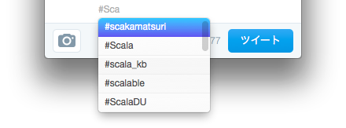
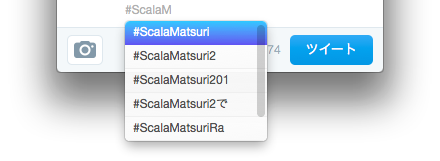

o #ScalaMatsuri x #ScalaMatsutri と感想について
概要
なぜ人はhashtagを間違えるのだろう。
ScalaMatsuri
に行ってきた。
特筆すべき2、３のこと
・言語を開発する人と利用者側としての原理主義的なものの隙間がみれてよかった
・アンカンファレンスでsbtについて聞けたのよかった
・Twitterのタグ間違い過ぎ
言語を開発する人と利用者側としての原理主義的なものの隙間がみれてよかった
主に小田好先生まわりのお話として、「いや～こういうつもりでつくってるねんで」みたいなのが
ダイレクトに聞ける環境だったのはよかった。主に2日目のアンカンファレンスの内容として、居合わせられてよかったなーと思う。
なんでも原理主義がこわくて、
このへんはずっと前にあった「こわくないScala」でも感じてたことだったんだけど、
言語作っている人はどう考えているんだろう、みたいな疑問があって、
例えば端的な答えとして、小田好先生が
「ScalaはFunctionalとOOPのどっちの特性も持つ初の言語なので、新しい問題にぶちあたるのは当然」
みたいなニュアンスのことを言っていたと思うんだけど、
これって原理主義どうしのV.S.みたいなものもひっくるめて「ああーきちゃったねぇー」みたいにとらえられているんだなあと思って、
まあこれ聞いて「固っ苦しい感じじゃないんでよかったなー」と安心しました。
別に安心/不安だからってどうこうあるわけじゃないけどさ。
元来、用途は使用者のものだし。
アンカンファレンスでsbtについて聞けたのよかった
特に1日目の終わりあたりで、sbtについて飲みながら井戸端っぽい感じで話をしていたのだけど、
2日目にて「sbt被害者の会」なるアンカンファレンスの内容が成立したのには心底驚いた。
まあ名前はギャグなんだと思っているし実際本当にナーバスな内容では無かった。
で、まあTypeSafe社でsbtに関わっている方々 + 参加者の皆さんで、sbtについて順繰り話をしていくことに。
とりあえず自分は以下の観点でだけ発言したつもり。
以下は当時のメモ(質問の番が来る前にガーーっと手元でまとめようとしたもの。支離滅裂感あるけどそのまま掲載。
太字の部分は、実際に何か話をしてからの加筆内容をメモったもの。括弧内は自分の感想。
参加してぶちまけて、それに対して真摯に話を聞いてもらったりアドバイスをいただいたりしていく中で、
自分がすごく誤解してたこととして、
・前提から難しいと思われていない
というのがあって、あーーこれはしまったなーと終わってから思った。
自分が言った(つもりで伝わってなかったであろう)言葉としては、以下のあたり。
「現在のデザインでなければいけない？ めっちゃ難しく解決できるようになっている気がする」
「なんでも書けば解決できる、という現在のデザインが、その難しい方向を助長してる気がする」
「難しいことできなくすることでできる事もあるんじゃないのか」
我ながら「まあなんて失礼な。貢献しなさいクソ野郎が。」みたいなこと言われそうな内容を言ったなあ。
アンカンファレンスでしかも「sbt被害者の会」なんて名前でなければ絶対に言わなかったと思う。
得られたフィードバックとしては、今後こういうのつくろうかなー、と思うだけのものがあった。 ようはモチベーション得られたぜ！という感じ。
あとついでにsbt serverについてちらっと聞けたのもよかった。
Twitterのタグ間違い過ぎ
たとえばTwitterのMac クライアントで以下のような状態になった

Suggestに大量の間違いhashtagがどんどんでてくる
なんだscakamatsuriって、、
みたいなのに気づかずにTwしてしまうことがままあって、
「だって補完ででるんだもんしょうがないじゃない！！」
みたいな気になるが、
このへんのミスを減らすために何ができるんだろう、みたいな課題が自分的にスタックされたのだった。
そんなScalaMatsuri。